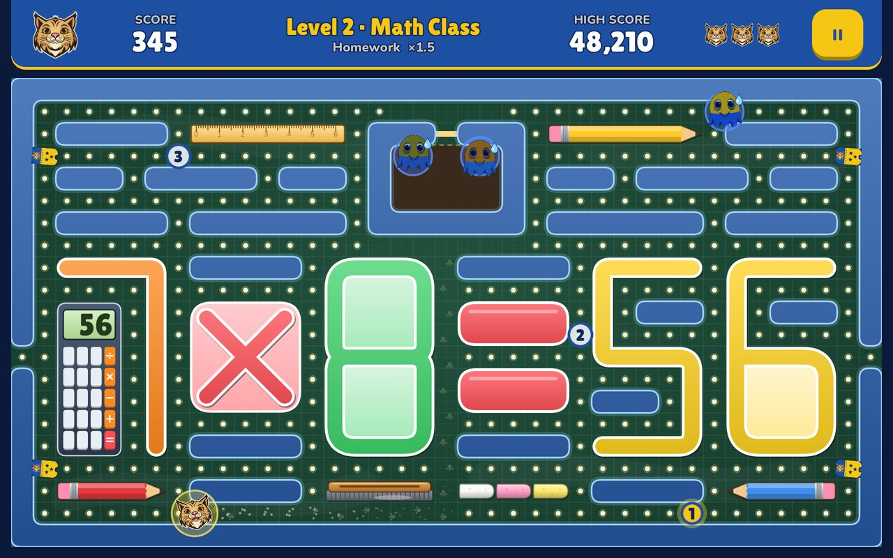
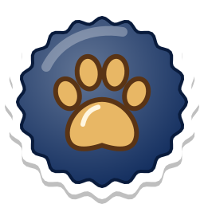
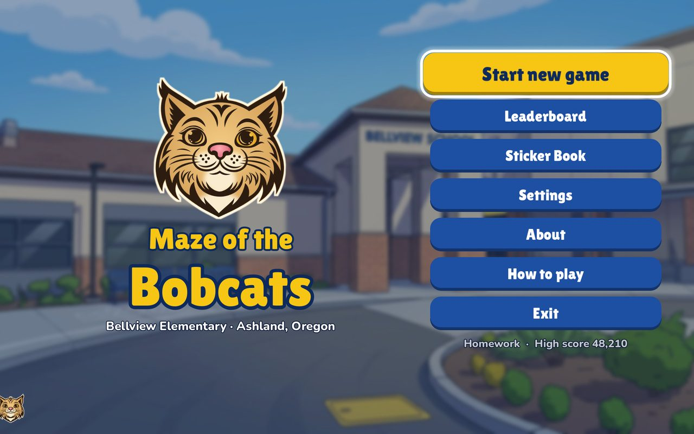
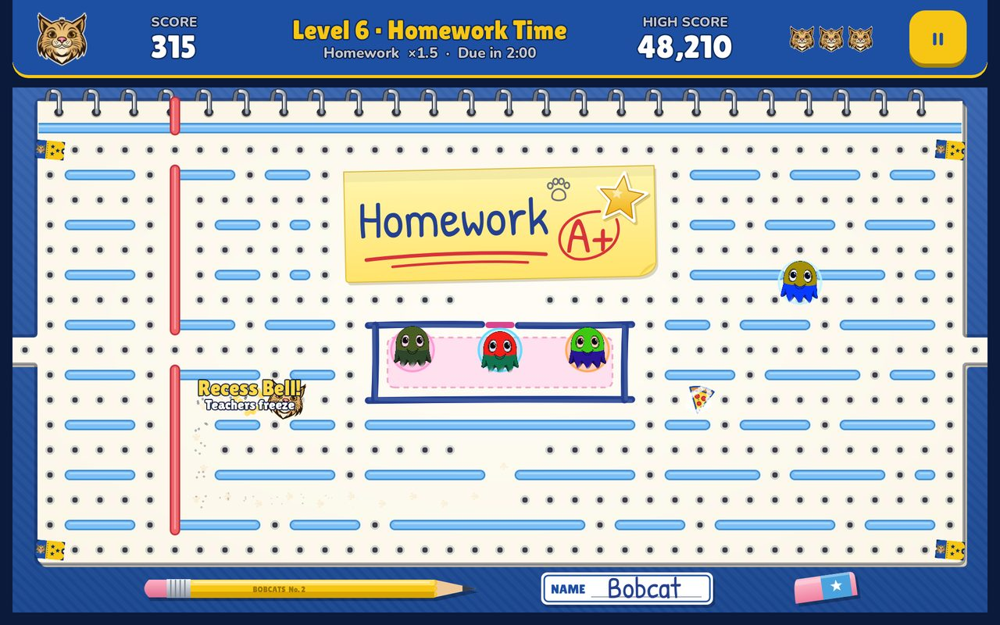

Maze of the Bobcats
Un inseguimento nel labirinto con Bobbie la lince, creato per il cabinato arcade della scuola elementare Bellview ad Ashland, in Oregon. Mangia i puntini, prendi i Bobcat Ticket e resta sempre un passo avanti agli insegnanti!
Per la scuola Bellview Cabinato arcade · Joystick e pulsanti



Forza, Bobcats!
Sei labirinti di scuola
Morning Bell, Math Class, Library, The Reflection Form, Lunch & Recess e Homework Time: ognuno è disegnato come un angolo della scuola.

Una sorpresa in ogni labirinto
Una campanella che rimanda gli insegnanti in sala professori, numeri da mangiare in ordine, zone del silenzio dove gli insegnanti non ti vedono, bucce di banana e altro ancora.
Bobcat Tickets
Prendi un Bobcat Ticket e gli insegnanti corrono in sala professori. Acchiappali per strada per fare tanti punti!
Veri insegnanti, come fantasmini simpatici
La scuola può aggiungere i propri insegnanti come fantasmini a cartoni animati, ognuno con una frase buffa quando ti prende. Le loro immagini restano nel cabinato e non vengono mai messe online.

Potenziamenti scolastici
Un Hall Pass per sgattaiolare oltre un insegnante, una Recess Bell che li congela, Sneakers velocissime e Pizza Friday, quando ogni puntino vale il doppio.

Un album di adesivi
15 adesivi da collezionare per imprese divertenti, come finire un livello senza farti prendere. Scrivi il tuo nome alla fine della partita per tenerli.

Classifiche
I punteggi migliori di oggi, della settimana e di sempre, così ogni giorno c'è un nuovo campione.

Uno o due giocatori
Gioca da solo o con un amico: a turno, ognuno con il suo labirinto, o in squadra nello stesso labirinto.

Fatto per un cabinato arcade
Un joystick e grandi pulsanti arcade, cinque livelli di difficoltà da Recess a Principal's Office e una demo che parte quando non gioca nessuno.
Immagini dal gioco






Come si gioca
Mangia ogni puntino. Guida Bobbie con il joystick (o scorri sullo schermo) e mangia tutti i puntini per finire il labirinto. Ogni tanto spunta un dolcetto per punti extra.
Attento agli insegnanti. Se un insegnante prende Bobbie, perdi una vita. Ogni insegnante ti insegue a modo suo, e diventano più veloci e furbi andando avanti.
Ribalta la situazione. Mangia un Bobcat Ticket in un angolo e gli insegnanti tornano di corsa in sala professori. Acchiappali per strada: ognuno di fila vale di più.
Finisci tutti e sei i labirinti e inizia il secondo giro, un po' più veloce. Fin dove arriverai?
Maze of the Bobcats è stato creato solo per il cabinato arcade della scuola Bellview, quindi non si può scaricare. Il gioco è in inglese.